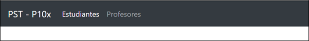

Laboratorio 7
Desarrollo de una aplicación Web (Cliente)
Objetivo:
-
Implementar rutas a nivel de cliente (Frontend) para actualizar las vistas rápidamente sin necesidad de
hacer peticiones al servidor.
-
Pasar a producción la programación del Frontend mediante la carpeta build al ser compilado el proyecto.
Duración:
Ciento veinte (120) minutos.
Materiales y Herramientas:
Investigación
Pregunta 1: ¿Qué es un hosting?
Pregunta 2: Mencione y describa otra herramienta en línea para generar máquinas virtuales como Microsoft Azure
Procedimiento
Paso 1: Diseño de la página Web
-
Abrir la carpeta “laboratorio6-7” en VS Code
-
Abrir un terminal e ingresar a la carpeta frontend
-
En el archivo App.js importar navigation: import Navigation from './components/Navigation'
import Navigation from './components/Navigation'
-
Desde el terminal instalar el siguiente módulo:
npm install react-router-dom
-
Importar las siguientes librerías en el archivo “App.js”
import React from 'react'
import {BrowserRouter as Router, Route} from 'react-router-dom'
-
Editar la función principal del archivo App.js
function App() {
return (
<Router>
<Navigation/>
</Router>
);
}
-
Instalar el framework de CSS (Bootstrap) y dependencias:
npm install bootstrap popper.js jquery
-
Al inicio del archivo App.js agregar las librerías de Bootstrap
import 'bootstrap/dist/js/bootstrap.js';
import 'bootstrap/dist/css/bootstrap.min.css';
-
Ir a la documentación de
Bootstrap, copiar el SEGUNDO código de Nav y reemplazar el <div> en el archivo “Navigation.js”
-
Dentro de las etiquetas, reemplazar la palabra “class” por “className” y los atributos href = "#"
reemplazarlos por href = "/"
-
Ejecutar el Frontend desde el terminal
-
Cambiar el color del
componente navbar del archivo Navigation.js y las pestañas para que se vea de la siguiente forma:

Si desea cambiar la alineación de las pestañas hacia la derecha, deberá agregar el atributo
ml-auto a la etiqueta
className=“navbar-nav”.
className=“navbar-nav ml-auto”
Paso 2: Configuración de rutas a nivel de frontend
-
Importar el componente “Link” de la librería “'react-router-dom” en el archivo “Navigation.js”
import { Link } from 'react-router-dom'
-
En el archivo “Navigation.js” reemplazar todas las etiquetas “a href” por “Link to”. Ej.
<Link className="navbar-brand" to="/">PST P10X</Link>
-
En el archivo “Navigation.js” cambiar la ruta de la pestaña Profesores a to="/profesores"
<Link className="nav-link" to="/profesores"> Profesores </Link>
-
Editar la función “App()” del archivo “App.js” para asignar la nueva ruta de profesores y la ruta inicio
para el frontend
import 'bootstrap/dist/js/bootstrap.js';
import 'bootstrap/dist/css/bootstrap.min.css';
import './App.css';
import Navigation from './components/Navigation'
import Show from './components/showEstudiantes'
import React from 'react'
import {BrowserRouter as Router, Route} from 'react-router-dom'
function App() {
return (
<Router>
<Navigation/>
<Route path="/" exact component={Show} />
<Route path="/profesores" render={()=>(<div>Lista de Profesores</div>)}/>
</Router>
);
}
export default App;
Paso 3: Conexión con el Backend
-
Agregar una variable de configuración en el archivo “App.js” del frontend (fuera de la función “App( )”
)
export const backend = {
host: "http://localhost",
port: 8080
}
-
Instalar desde el terminal el módulo “axios”
-
En el archivo “showEstudiantes.js” importar el módulo axios y la variable de configuración
import axios from "axios"
import {backend} from '../App'
-
Dentro de la clase “showEstudiantes” (pero fuera de la función “render( )” ), agregar el siguiente
código:
state = {
users: [],
idEstudiante:'',
nombreEstudiante:'',
apellidoEstudiante:''
}
async getEstudiantes() {
const res = await axios.get(backend.host + ':' + backend.port + '/estudiantes');
this.setState({users:res.data});
}
async componentDidMount() {
await this.getEstudiantes();
console.log(this.state.users);
}
Si desea usar atajos para diseñar etiquetas HTML con Javascript en React, presione la tecla F1,
digite “open settings (JSON)” y presione ENTER; en el archivo de configuración que aparece,
agregar el siguiente par clave-valor:
"emmet.includeLanguages": {
"javascript": "javascriptreact"
}
-
En la función “render( )” borrar las etiquetas <div> y </div>, digitar .row y teclear ENTER
para que se cree automáticamente la etiqueta <div className=“row”> </div> (si es que realizó
la sugerencia del literal anterior, caso contrario
deberá editar el código de la siguiente manera):
<div className="row">
<div className="col-md-4">
Formulario
</div>
<div className="col-md-8">
<ul className="list-group">
{
this.state.users.map(user => (
<li className="list-group-item list-group-item-action" key={user.id} id={user.id} onDoubleClick={this.ondelete}>
{user.nombre+" "+user.apellido}
</li>)
)
}
</ul>
</div>
</div>
-
Iniciar el backend desde otra terminal en caso de que no esté activado, si no tiene ningún estudiante
almacenado en el backend, utilice Postman para agregarlos mediante POST.
-
Modificar el contenido de la etiqueta <div className="col-md-4"> por:
<div className="col-md-4">
<div className="card card-body">
<h4>Ingresar estudiante</h4>
<form onSubmit={this.onSubmit}>
<div className="form-group">
<input type="text" className="form-control" value={this.state.idEstudiante} placeholder="Id" onChange={this.onChangeId}/>
<input type="text" className="form-control" value={this.state.nombreEstudiante} placeholder="Nombre" onChange={this.onChangeNombre}/>
<input type="text" className="form-control" value={this.state.apellidoEstudiante} placeholder="Apellido" onChange={this.onChangeApellido}/>
</div>
<button className="btn btn-primary" type='submit'>Guardar</button>
</form>
</div>
</div>
-
Fuera de la función “render ( )”, crear las funciones de los literales e) y g): (onDelete, onSubmit,
onChangeId, onChangeNombre y onChangeApellido)
onChangeId = (e)=>{
this.setState({
idEstudiante: e.target.value
})
}
onChangeNombre = (e)=>{
this.setState({
nombreEstudiante: e.target.value
})
}
onChangeApellido = (e)=>{
this.setState({
apellidoEstudiante: e.target.value
})
}
onSubmit = async (e)=>{
e.preventDefault();
try {
const res = await axios.post(backend.host + ':' + backend.port + '/estudiantes',{
id:this.state.idEstudiante,
nombre:this.state.nombreEstudiante,
apellido:this.state.apellidoEstudiante
})
console.log(res);
} catch (error) {
alert(error.response.data);
}
this.getEstudiantes();
this.setState({idEstudiante:''});
this.setState({nombreEstudiante:''});
this.setState({apellidoEstudiante:''});
}
ondelete = async (e)=>{
console.log(e.target.getAttribute('id'));
}
Pregunta 3: Modificar la función onDelete para que elimine a un estudiante al dar doble clic sobre él y se
actualice la lista.
Paso 4: Frontend en producción
Una vez realizado todas las pruebas en el frontend y observar que todo funciona como debe, el siguiente paso es
compilar el código de React para generar una página estática y poder subirla a un servidor específico como
Apache o Nginx; en esta práctica se subirá el frontend al mismo servidor web donde se encuentra el backend.
-
Detener ambos procesos, tanto el frontend como el backend.
-
En el terminal del frontend ejecutar el siguiente comando:
-
Copiar la carpeta build que se creó en el literal anterior y pegarla dentro de la carpeta src pero
del backend.
-
En el archivo “app.js” del backend, agregar el módulo “path”
const path = require('path');
-
Utilizar el middleware static de express
server.use(express.static(path.join(__dirname, 'build')));
-
Implementar la función get para llamar a los archivos estáticos del frontend
server.get('/', function (req, res) {
res.sendFile(path.join(__dirname, 'build', 'index.html'));
})
-
Activar solamente el servidor web del backend.
RETO
Levantar el mismo servidor web, pero en la nube de Microsoft Azure, sólo es necesario migrar la carpeta del
Backend. Recuerde que el backend al estar en la nube, debe primero cambiar el archivo de configuración del
frontend (App.js) y volver a generar la carpeta build.